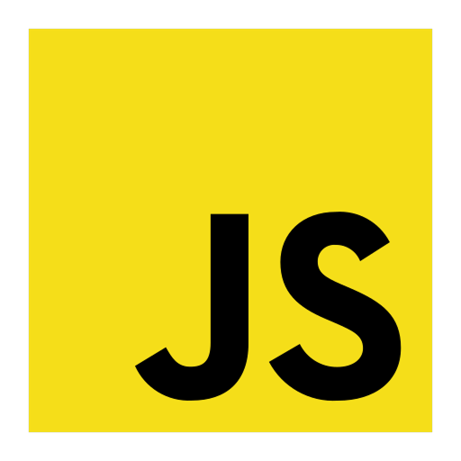
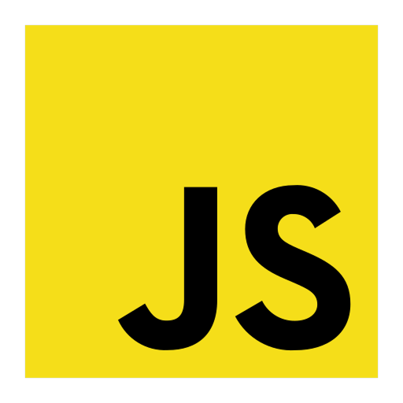
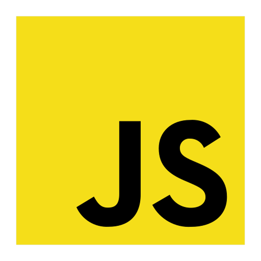

Email: ggabrielcunha06@gmail.com
Telefone: (13) 99610-1137
Idade: 18 anos
GitHub: GabrielCunhaSTS
Olá! Eu sou o Gabriel, tenho 18 anos e sou um desenvolvedor backend júnior. Minha trajetória na programação começou no início de 2022, quando, após pesquisar sobre o mercado de tecnologia, decidi estudar mais sobre a área.
Fiz cursos de desenvolvimento web e banco de dados Microsoft Server pela faculdade Microlins, o que despertou meu interesse ainda mais em seguir nessa carreira. Depois, ingressei no curso técnico em Desenvolvimento de Sistemas na Etec Dra. Ruth Cardoso, onde aprofundei meu conhecimento em diversas tecnologias e metodologias.
Desenvolvi uma afinidade por bancos de dados e desenvolvimento backend. Após o curso, passei seis meses focado em aprimorar minhas habilidades e buscando oportunidades de trabalho. Fui aprovado na Fatec e hoje curso Sistemas para Internet no campus Rubens Lara, na Baixada Santista.
Sou morador do Humaitá, em São Vicente. Gosto de jogar basquete, videogame e conhecer novos lugares. Tenho uma irmã mais nova, moro com meus pais e atualmente estou no processo de tirar minha CNH.

Descrição do conteúdo do certificado ou projeto. Aqui você pode detalhar do que se trata, quais tecnologias foram usadas e qual seu papel.